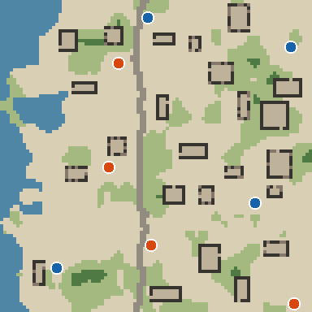
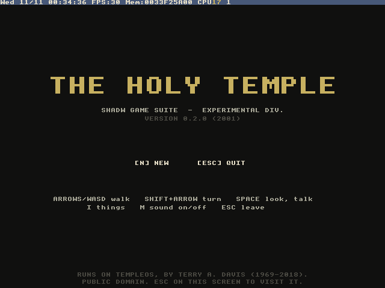

Games
Games that already run it
Four different games in four languages, each with a shadw.game.json and a headless test that passes under Forge. None is released yet.

Brine & Brie: Shipwright
A pixel-art mouse builds a ship on a grid and sails it with the wind. Brie walks the deck and works only the station she stands at; a bigger ship wants a second mouse. C# on Godot 4.7.2 .NET, on a sea from Terrain.
25 / 25 checks under Forge
Tidewatch
The suite's map showcase: a Godot tactics game on a Terrain coastal_outpost map (seed 7, 96×96, 8 spawns, one per seat). Its bot match plays 3 v 3 units over 20 seeds.
6 / 14 wins over 20 seeds The bot test shows spawn-1 is favoured on this map: the kind of finding the test exists to surface.

Shadow Duel
A JavaScript card game with a seeded bot. Its bot-versus-bot match runs on the real rules engine under Forge: 12 / 8 wins, 19.5 turns on average, 20 seeds. It is the suite's chosen example title (decision G3), and its port to Godot is planned.
Source: SolutionsAsService/shadw.duel.
The Holy Temple
A surreal RPG written in HolyC that runs inside TempleOS, the public-domain operating system by Terry A. Davis, under QEMU: 23 regions, 365 maps and over 360 people. Its test is the real thing: shadw game test boots TempleOS headless, the operating system compiles the game from source and runs its tests, and Forge hashes the serial log and the screenshots. The suite's templeos engine maps gamec to the TempleOS backend.
TempleOS verdict PASS in 75 s under Forge Network off; the game tree mounted read-only.
Source: SolutionsAsService/ThirdTemple; map of its world: holy-temple-map.

The same proof for each
A seed replays the same match and the same log hash in every one of them, and every run leaves a hashed artifact and an event chain. That is what Forge adds.